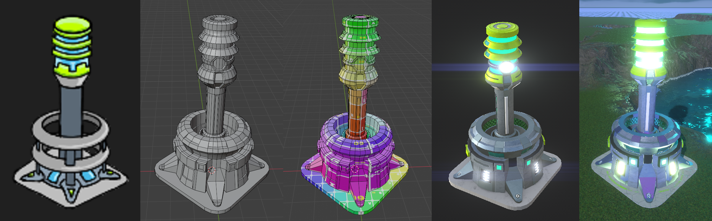

Modern Sci-Fi RTS Game
A modern real-time strategy game inspired by classic RTS titles, featuring large-scale army management, complex energy economies, custom shaders, and robust editor tools in HDRP.
OVERVIEW
A deep sci-fi strategy experience pitting distinct factions against each other until a common menace arrives. Built around traditional base building, power grid management, resource logistics, fog of war, and massive army engagements against advanced AI.
MY ROLE
Main idea and script, technical Art Direction, 3D models optimization, complex Shader Graph development, custom editor tooling, VFX creation and HDRP performance optimization for large armies. Mechanics scripting, UI and UX design, sound & ambience, animation and game testing.
3D Pipeline & Optimized Units
Clean mid-poly assets balanced across unit tiers for massive battlefield performance.
TIERED UNITS MODELING
Carefully budgeted polygon counts tailored to unit types and hierarchy tiers (infantry, armored vehicles, aircraft, and heavy structures) to ensure high visual fidelity.
BUILDINGS
Structures designed to match each faction playability and architectural style, with animations, VFX and texture damage. Asymmetrical factions with unique power generation and resource harvesting mechanics.
TERRAIN
Height map generated Unity terrain modified and detailed with Unity terrain tools and with assets populated with my own Prefab Painter Tool.

PIPELINE
Deep knowledge of all the process involved in the development of a game. Starting with the concept art, modeling it on 3D on Blender, unwrapping the UVs, texturing it on Substance Painter and importing it into Unity. Once on the editor, the materials are created and adjusted, added necessary scripts and parameters definition, animation and sound integration and finally prefab generation ready to use in game.
Shaders & Technical Art
Advanced materials featuring Team Color architecture, volumetric fog, and procedural effects.
ADVANCED TEAM COLOR SHADER
A complete HDRP shader designed for use in all units which need Team Color, Animated Textures (conveyor belts, emission circuits, tank tracks...). It manages multiple core material properties, SSR transparency, dynamic team coloring, wear effects, real-time damage and animations for a wide range of Unity scenarios. It also features a vanishing effect for Fog Of War dissappearing and occlusion.
VOLUMETRIC FOG OF WAR
Fog of war implemented using render textures and scripting. Can be used with volumetric fog or with a simple plane fog simulation.
ENVIRONMENTAL SHADERS
Custom water materials and wind-reactive foliage shaders creating a more alive environment. Animated sci-fi force fields, holographic displays and emissive liquids.
Custom Editor Tools
Own created Unity tools built to accelerate pipeline efficiency and level design.
ROAD & PATH TOOLS
Custom spline-based path generators for quick infrastructure and terrain alignment. It allows the use of different meshes as railways, roads, pipes, cables... It also uses spline anchors snapping with intersections.
EDITOR TOOLS
Specialized scene event and region editors to script gameplay triggers, objectives, and map conditions effortlessly. Prefab Painter tool to populate assets around the map easily.
Visual Effects
Dynamic combat feedback and cinematic battlefield energy.
ENVIRONMENT
Water, fireflies, rain and fog environment effects to give a realistic nature effect to the gameplay.
SUPER-WEAPONS
Procedural explosions with vapor distortion and cinematic orbital laser strike effects integrated into combat.
Optimization & Crowd Performance
Smooth real-time execution for large-scale armies.
NAVMESH CROWD MANAGEMENT
Optimized script architecture and pathfinding parameters handling big armies of units moving smoothly while maintaining desired formations without lagging.
LODs & GPU INSTANCING
Camera distance-based LODs, occlusion culling, and element instancing combined with customizable graphics options.
Gameplay, AI & Evolution
From early prototypes to a fully realized tactical experience.
CORE STRATEGY LOOP
Full base construction, resource collection logistics, harvester defense, and asymmetrical faction energy management.
ADVANCED AI & UI
A robust enemy AI capable of strategic decision-making depending on resources and map exploration.
FLYING NAVIGATION
Flying units navigation, volumetric fog, weather effects and floating UI. First road and buildings test.
FIRST MECHANICS TEST
Navmesh navigation and obstacles, point & click control and basic UI testing.
EARLY GAMEPLAY
Complex navigation, gameplay testing with previous unit models and textures. Weapon and combat testing.
Technologies
Main tools and tech stack behind the project.